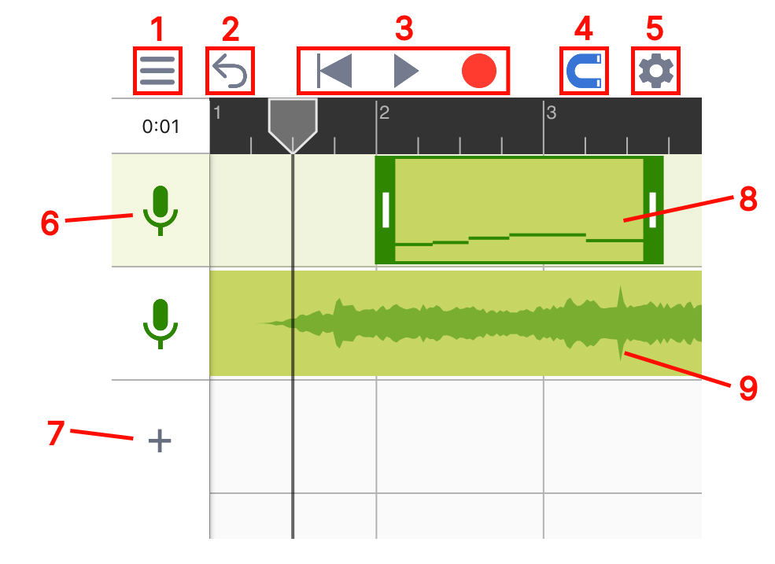
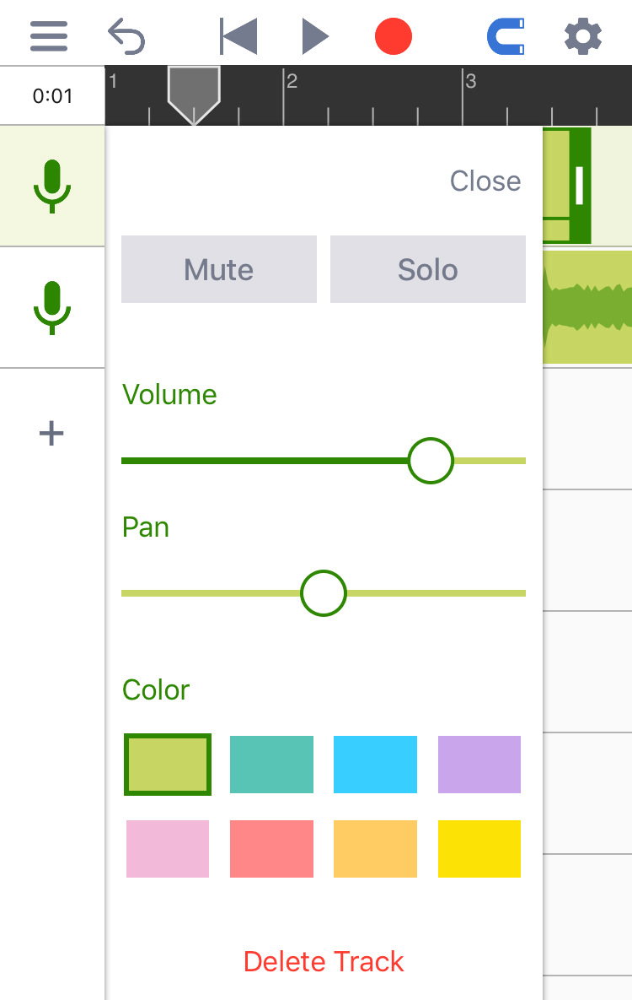
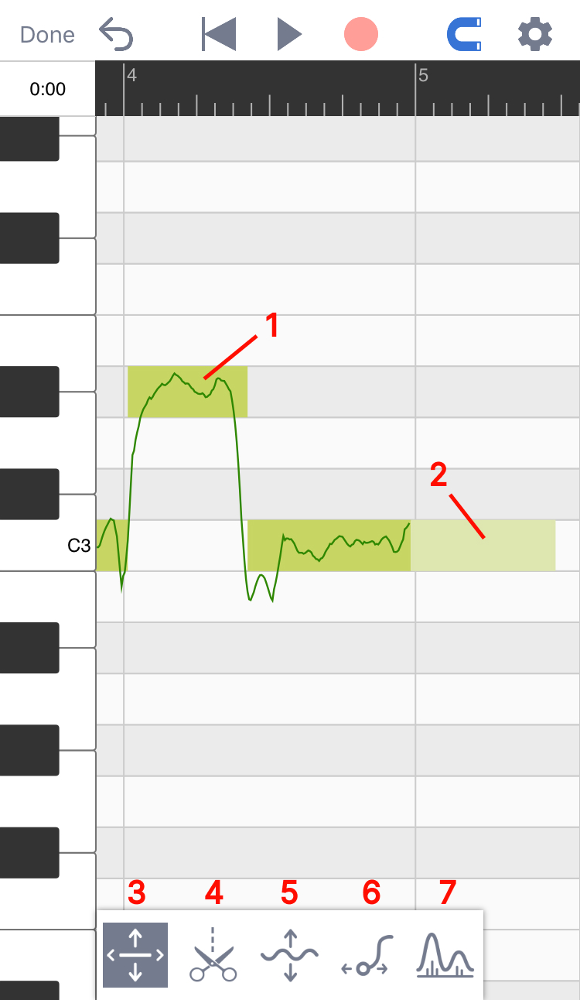
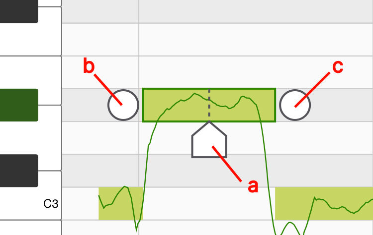
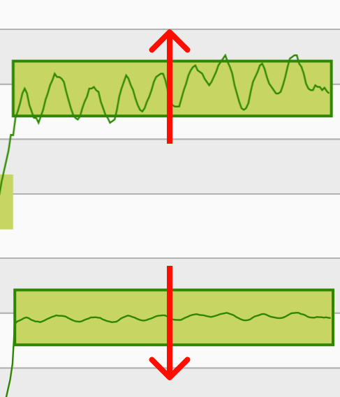
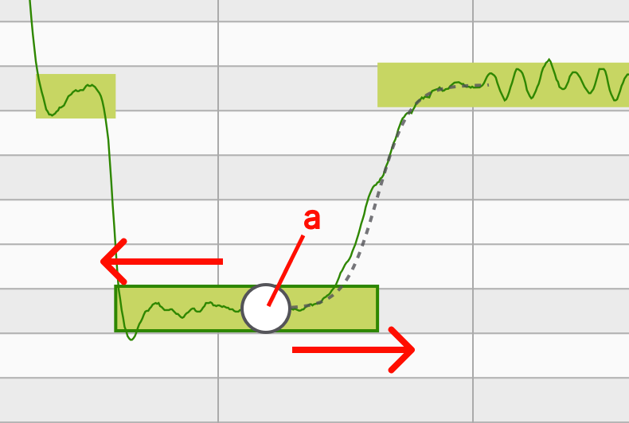
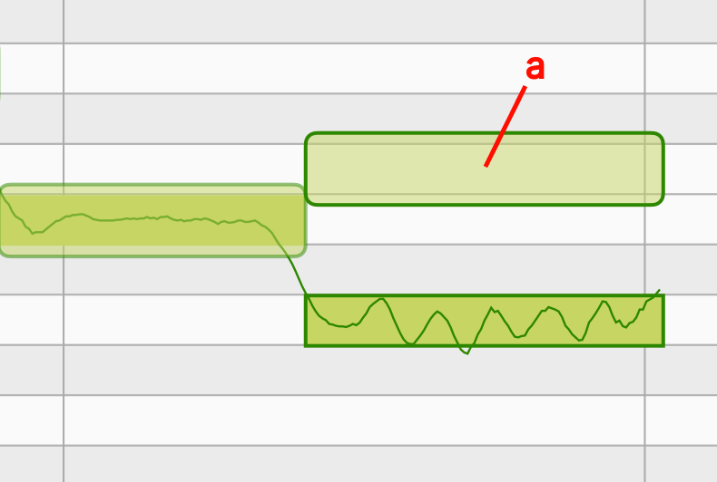

操作指南
音乐黏土是一款强大的音高编辑工具。当使用音乐黏土录歌时，程序会通过算法分析人声的音高，并且允许使用者对每一个音符的音高进行修改。音乐粘土在拥有强大功能的同时也拥有简单的界面和清晰的流程指引，使用者只需要了解了下面两个程序页面便可轻松使用。
工程页面
在工程页面下使用者可以添加音轨、录制人声并摆放已经录好的片段。

2
撤消: 使用此按钮可以撤消对工程文件所做的更改。在较小的屏幕上运行时，长按撤消按钮会出现恢复按钮。其它时候，恢复按钮会出现在撤消按钮旁边。
4
对齐网格: 点亮后所拖动的东西会自动对齐网格。
5
设置: 这里有节拍器、速度、拍子记号和实时监听的设置。
6
音轨图标: 点一次会选中此音轨，点两次可以打开音轨的设置面板。每个音轨的设置面板里都包含常见的声道控件，例如静音/独奏，音量和声场定位。同时也可以在这里改变音轨的颜色。

7
添加音轨: 点这里可以添加空音轨、伴奏音频或把人声音频文件导入进音乐黏土中分析并修改。（“导入第三方人声音频”的功能需要解锁专业版本）
8
人声音频: 人声音频上的微型图展示了音频里所有的音符，双击人声音频可以进入音高编辑页面。
9
伴奏音频: 伴奏音频会以声波图的形式显示在界面上。
音高编辑页面
在音高编辑页面里你可以对每一个音符的音高进行修改。（通过双击人声音频来打开该页面）

1
有调音符: 方形的轮廓代表音符的大致音高。轮廓里的线条代表了在每一时刻的精准音高。
2
无调音符: 没有线条的浅色音符代表无音调的声音，这些声音可以是呼吸，混响或环境噪音。
3
主工具: 用来调整音符的音高和音符的起始时间。

4.a
位置标记: 移动它到你需要切割的位置，到位后点击位置标记（或者上拉）即可把当前音符一分为二。
4.b
合并按钮（左）: 点击此处可以让当前音符和左边的音符合并。
4.c
合并按钮（右）: 点击此处可以让当前音符和右边的音符合并。
5
颤音工具（专业版功能）：使用此工具可更改每个音符中的颤音幅度。选择颤音工具后，你可以在所选音符上向上拖动以放大其颤音或向下拖动以拉平其颤音。

6
连音工具（专业版功能）：选择了连音工具后，单击音符将出现一个连音拖扭。使用者可通过拖动此拖钮来更改音高在两个音符之间过渡的速度。

6.a
连音托扭: 如需让两个音符之间的过渡变慢，将这个手柄向左拖动，如需让过渡更快，则将手柄向右拖动。
7
声线工具（专业功能）：此工具可以用来改变人声的声线。此处声线代表的是人声信号在频谱上的大致形状。体型较大的歌手通常会发出低沉的声音（能量集中在较低频率的频谱）。另一方面，身体较小的歌手通常声音更明亮（能量集中在更高的频率上）。使用声线工具，你可以通过重塑人声在频谱上的能量分布来创造新奇的效果。

7.a
声线块： 选择声线工具后，每个音符上都会出现一个透明的方块。可通过向上或向下拖动此透明方块以更改音符的声线。